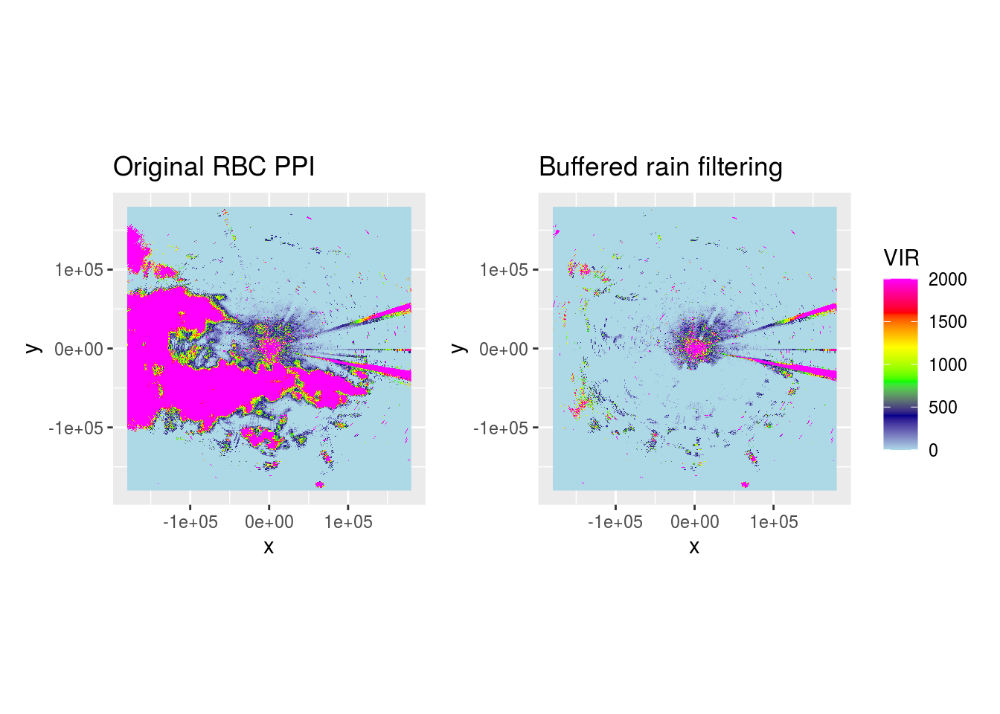
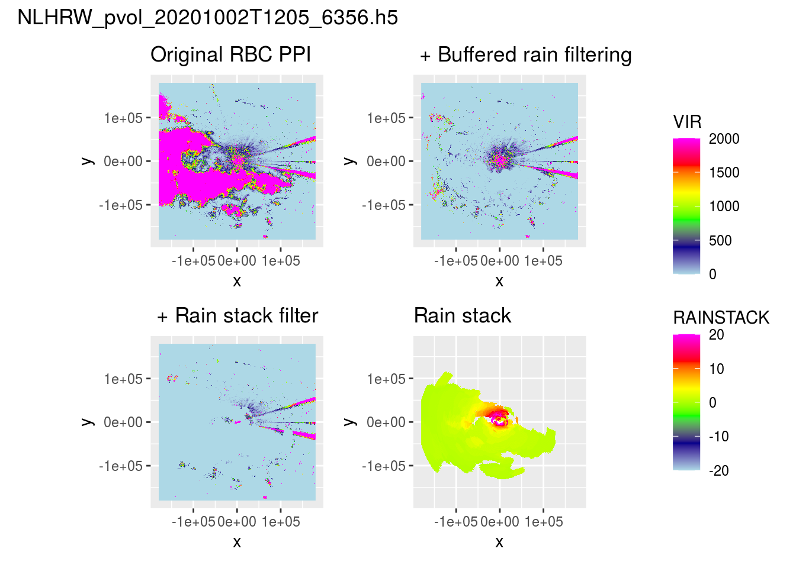

3 Rain stacking
We follow a similar approach as outlined in the rain segmentation approach, but this time we ‘stack’ the segmented across the different elevation scans, in essence to filter all scans from rain using the calculated maximum spatial extent of a rain cloud.
3.1 Problem
Let’s load a pvol with rain and show what it looks like after range-bias correction.

We can see most rain is removed, but speckles remain in areas which mostly should be clear from precipitation.
classify_rain <- function(scan) {
if (scan$geo$elangle < 90) {
dpr <- as.cimg(scan$params[["DPR"]])
(dpr <= -12 & !is.na(dpr)) %>%
medianblur(4) %>% # Works adequate for de-speckling
threshold(0) %>% # Set all pixels that have been affected by median blurring to 1, rest to 0
split_connected() %>% # Split image in contiguous areas classified as rain
purrr::keep(~ sum(.) > 100) %>% # Only keep contiguous rain areas if area is > 50 pixels
parany() -> contiguous # Merge to 1 image again
if (!is.null(contiguous)) { # Only buffer if any rain areas of > 50 pixels are retained
contiguous %>%
distance_transform(1, 2) %>% # Calculate Euclidean distance (2nd argument) to pixels classified as 1
threshold(5) -> dpr_filter
dpr_filter <- as.matrix(-dpr_filter)
dpr_filter[dpr_filter == -1] <- NA
scan$params$RAIN <- dpr_filter
class(scan$params$RAIN) <- c("param", "matrix")
}
}
return(scan)
}
pvol$scans <- lapply(pvol$scans, function(x) {
x$params[["DBZH"]][is.na(x$params[["DPR"]])] <- NA
x <- classify_rain(x)
return(x)
})
ranges <- lapply(pvol$scans[1:15], function(x) {
data <- do.call(function(y) x$params[[y]], list("RAIN"))
class(data) <- "matrix"
range <- (1:dim(data)[1]) * x$geo$rscale
groundrange <- round(beam_distance(range, x$geo$elangle))
list(raster::flip(raster::raster(t(data), ymn = 0, ymx = 360, xmn = 0, xmx = max(range)), direction = "y"),
raster::flip(raster::raster(t(data), ymn = 0, ymx = 360, xmn = 0, xmx = max(groundrange)), direction = "y"))
})
get_largest_extent <- function(rasters) {
# https://gis.stackexchange.com/a/287081
extents <- sapply(rasters, FUN = function(x) {
raster::extent(x)
})
r <- raster(ext = extents[[1]], nrows = rasters[[1]]@nrows, ncols = rasters[[1]]@ncols)
max_extent <- sapply(extents, FUN = function(x) {
r <<- raster::extend(r, x)
})
raster::extent(r)
}
target_extent <- get_largest_extent(lapply(ranges, function(x) x[[2]]))
groundranges_points <- lapply(ranges, function(x) rasterToPoints(x[[2]], spatial = TRUE))
groundranges_coverage <- mapply(function(x, i) {
r <- x[[2]]
r[!is.na(r)] <- i
rasterToPoints(r, spatial = TRUE)
}, ranges, get_elevation_angles(pvol)[1:15])
gr <- do.call(rbind, groundranges_points)
gr_cov <- do.call(rbind, groundranges_coverage)
g <- rasterize(gr, raster(target_extent, res = c(500, 1)), "layer", fun = "count")
# g_cov <- rasterize(gr_cov, raster(target_extent, res = c(500, 1)), "layer", fun = "sum")
g_cov <- rasterize(gr_cov, raster(target_extent, res = c(500, 1)), "layer", fun = mean, na.rm = TRUE)
g <- g_cov
g_dist <- as.cimg(g_cov)
pvol$scans[1:15] <- mapply(function(scan, rainmask) {
cropped <- crop(g, rainmask[[2]])
resampled <- resample(cropped, rainmask[[1]])
scan$params$RAINSTACK <- t(as.matrix(flip(resampled, "y")))
class(scan$params$RAINSTACK) <- c("param", "matrix")
attributes(scan$params$RAINSTACK) <- attributes(scan$params$DBZH)
attr(scan$params$RAINSTACK, "param") <- "RAINSTACK"
return(scan)
}, pvol$scans[1:15], ranges, SIMPLIFY = FALSE)
pvol$scans <- lapply(pvol$scans, function(x) {
x$params[["DBZH"]][!is.na(x$params[["RAINSTACK"]])] <- NA
return(x)
})
ppi_filtered <- integrate_to_ppi(pvol, vp, xlim = c(-180000, 180000), ylim = c(-180000, 180000), res = 500, param = "DBZH")## Warning in integrate_to_ppi(pvol, vp, xlim = c(-180000, 180000), ylim =
## c(-180000, : ignoring 90 degree birdbath scan
ppi_rainmask <- project_as_ppi(get_param(pvol$scans[[1]], "RAINSTACK"), grid_size = 500, range_max = 180000)
# (plot(ppi_filtered)) + plot(ppi_rainmask) +
(ppiplot_rainy + (plot(ppi_buffered) + ggtitle(" + Buffered rain filtering"))) /
((plot(ppi_filtered) + ggtitle(" + Rain stack filter")) + (plot(ppi_rainmask) + ggtitle("Rain stack"))) +
plot_layout(guides = "collect") + plot_annotation(title = basename(pvolfile))